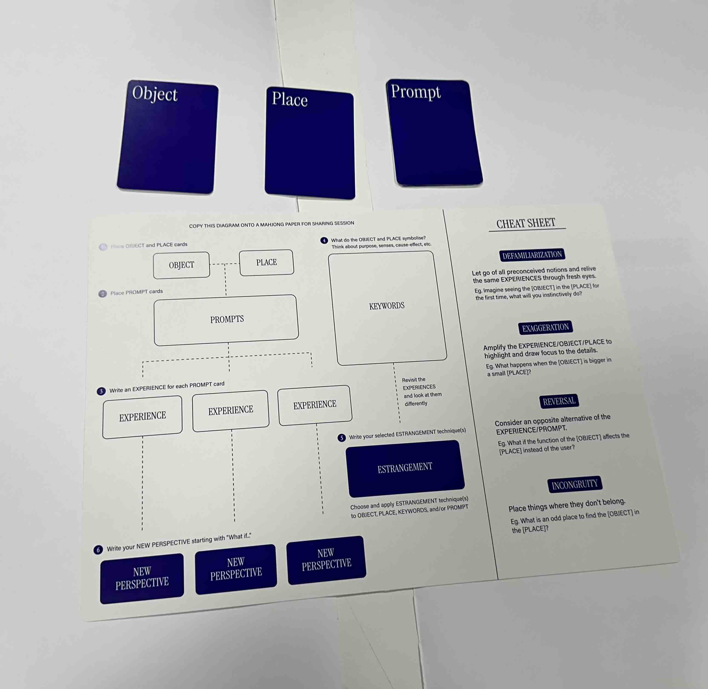
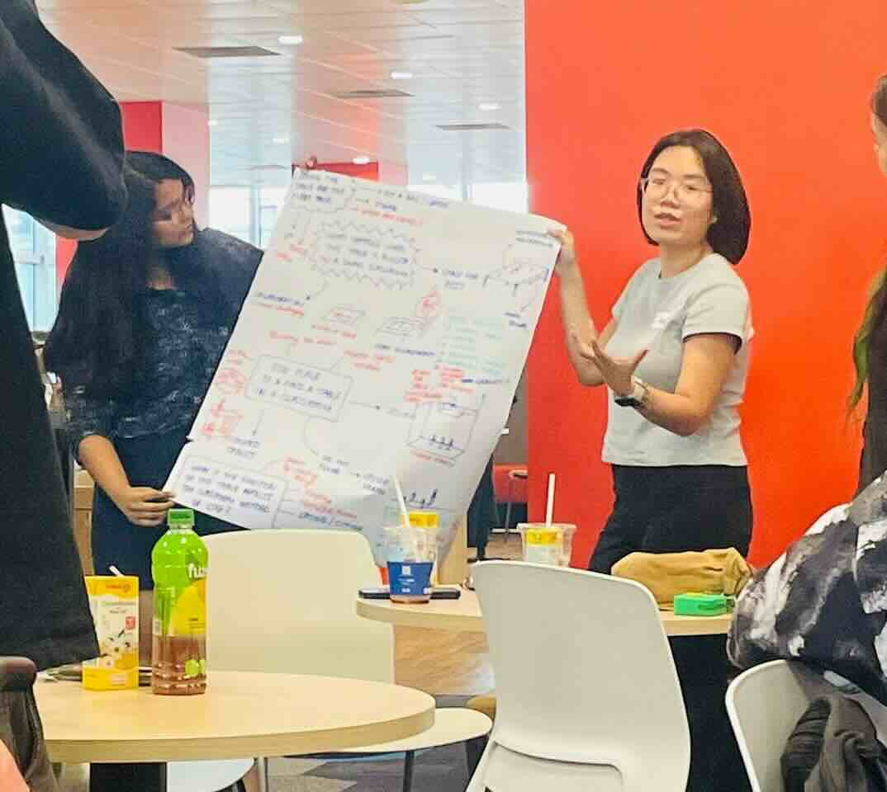
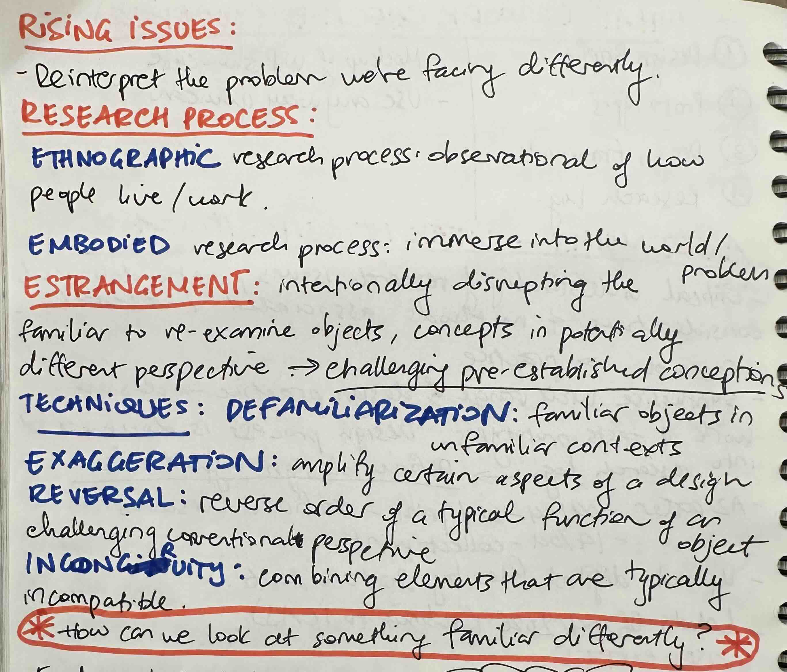
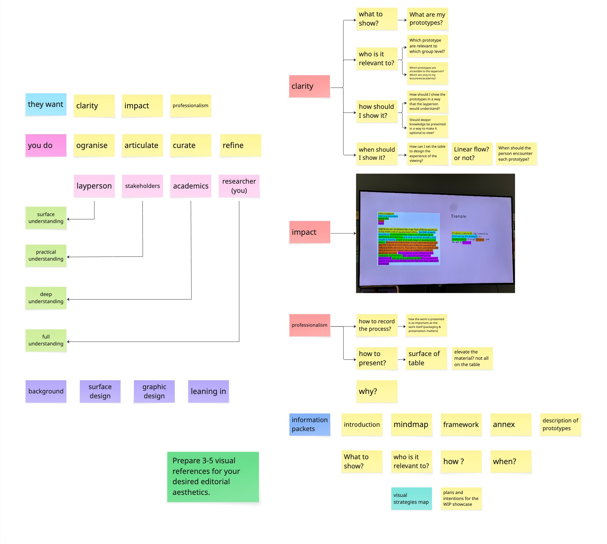

Activities
- Attend "Exploring Estrangement through Design Process" Seminar
- Develop Anaglyph Puzzle Rules and Word Search
- Attend Design Workshop with Guest Lecturer
Reflection
This week, my supervisor asked the Social Change Research Theme students to attend the "Exploring Estrangement through Design Process" Seminar at NAFA, which I found to be quite interesting. During the workshop, we were presented with some tools to engage in the process of 'estrangement' thinking, which is a way to help develop original and unique ideas that would be difficult to achieve using traditional means of brainstorming.

We were also asked to try to use these tools for idea generation by considering the relationship between a chair and a classroom. Our group came up with quite a few interesting ones using all 4 estrangement techniques, which we presented to the other groups.

I tried applying these techniques into my own prototype development, which helped me come up with the idea for the 'Anaglyph' puzzle.

Anaglyph is a kind of a visual technique that creates an optical effect by overlaying two differently filtered color images. Usually misleadingly described as a three-dimensional illusion, but it's really just different images layered on each other can only be seen using specific colored lenses.

To me, this idea of different lenses resonates with the frustration of how people tend of miscommunicate or mean another things when they really mean something else. Hence, I thought it would be interesting to implement this mechanic into a puzzle.

Also in this week, we had our first design workshop which helped us think about our WIP display. It made me consider about how I should present information for different types of visitors, which I hadn't thought about before. And I started working on the homework from this workshop.

Literature This Week
Tasks
- Develop the word search content and apply anaglyph mechanics
- Start vision board and layout for WIP table display
- Develop the printer installation once it arrives